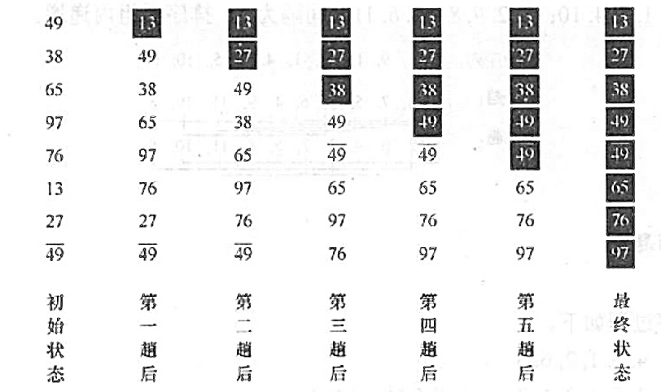

2022.09.19
交换排序冒泡排序快速排序

xvoid BubbleSort(ElemType A[], int n){ bool flag; for(int i=0;i<n-1;i++){// 每一趟排序 flag=false; for(int j=n-1;j>i;j--) if(A[j-1]>A[j]){ swap(A[j-1],A[j]); flag = true; } if(flag==false) return; // 奔放遍历后没有发生交换，表已有序 }}
x
void BubbleSort(ElemType A[], int n){
bool flag;
for(int i=0;i<n-1;i++){// 每一趟排序
flag=false;
for(int j=n-1;j>i;j--)
if(A[j-1]>A[j]){
swap(A[j-1],A[j]);
flag = true;
}
if(flag==false) return; // 奔放遍历后没有发生交换，表已有序
空间复杂度：O(1)
时间复杂度：平均O(n^2)，最坏O(n^2)
快速排序可视化展示